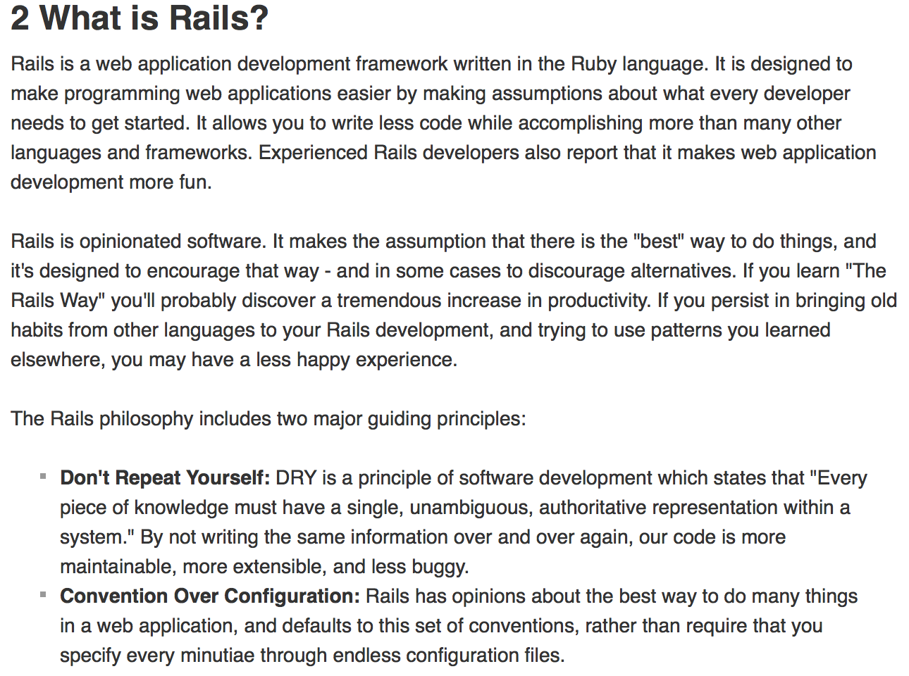

Rails
Tuesday July 13, 2015
Straight from the horses mouth:
TL:DR; Rails is an application built for Ruby developers in order to expediate the process of building web applications and websites. The way rails does this is by establishing convention. Essentailly when you start to build a project in rails you get a lot of stuff for free. Stuff like routes, which sets up communication between files, you get ActiveRecord, you get scaffolding, you get generate, you get gemfile, and database options and much more. Rails enforces MVC and breaks down your projects with that paradigm in mind. Rails also comes with a local webserver so that you can test your project as you build it.